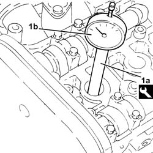
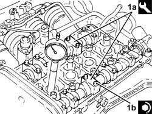
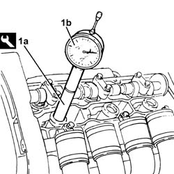
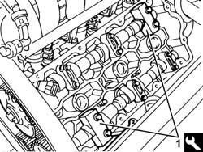
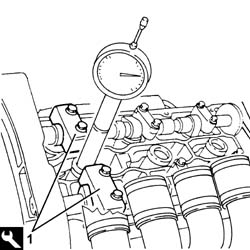
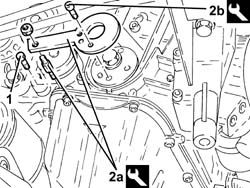
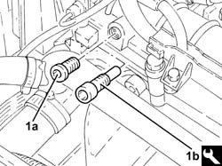

0510A20 timing gear with belt drive - check - carry out operation with cam cover(s) removed and tappets adjusted
- Path
- Procedures > 05 DIAGNOSTICS > 0510 VARIOUS CONTROLS > 0510A checks on engine > 0510A20 timing gear with belt drive - check - carry out operation with cam cover(s) removed and tappets adjusted
- Kind
- repair procedure (removal / refitting; the operation number is the code)
- Applies to
- engines: 2.0 JTS, 3.2 V6, 1.9 JTD 16v, 2.0 JTS, 2.4 JTD 20v; all production periods
- Interactive page
- https://sloeber94.github.io/elrnDB-a156/en/#/3237425
Applies to: engines: 2.0 JTS, 2.0 JTS; all production periods
Remove the spark plug for cylinder no. 1.
1. Fit the tool (1a), complete with dial gauge (1b), in the housing of the spark plug for cylinder no. 1.
 | Name | Country |
|---|---|---|
1a | Extension | 1.860.895.001 |

Applies to: engines: 2.0 JTS, 2.0 JTS; all production periods
Adjust the bolt securing the timing drive sprocket and turn the crankshaft clockwise, timing gear side, until the piston of cylinder no.1 is at T.D.C. in the explosion stroke.
Undo the bolts and remove the 4th cap on the inlet side camshaft and the 2nd cap on the exhaust side camshaft.
1. Fit the tool (1a) in place of the camshaft caps removed and fix it tightening the bolts (1b) to the recommended torque.
| Name | Country |
|---|---|---|
1a | Gauge | 1.870.859.000 |
 | Fastening | Component | Ø | Value (daNm) |
|---|---|---|---|---|
1b | Bolt | ENGINE TIMING ADJUSTMENT TEMPLATES | M7 | (Cylinder head side) 1.0 |

Applies to: engines: 2.0 JTS, 2.0 JTS; all production periods
Remove the tool for timing the camshafts.
| Name | Country |
|---|---|---|
- | Gauge | 1.870.859.000 |
Place the previously removed camshaft caps back in their housings and secure them tightening the bolts to the recommended torque.
| Fastening | Component | Ø | Value (daNm) |
|---|---|---|---|---|
- | Bolt | CAMSHAFT SUPPORTS | M7 | (Cylinder head side) 1.4 ÷ 1.7 |
Remove the tool to check T.D.C. from the cylinder 1 spark plug socket.
| Name | Country |
|---|---|---|
- | Extension | 1.860.895.001 |
Place the spark plug for cylinder no. 1 back in its housing and tighten them to the recommended torque.
| Fastening | Component | Ø | Value (daNm) |
|---|---|---|---|---|
- | - | SPARK PLUGS | M14 | (Cylinder head side) 2.4 ÷ 3.0 |
Applies to: engines: 3.2 V6; all production periods
Undo and remove the spark plug for cylinder no. 1.
1. Fit the tool (1a), complete with dial gauge (1b), in the housing of the spark plug for cylinder no. 1.
| Name | Country |
|---|---|---|
1a | Fitting tool | 1.821.225.000 |
Rotate the crankshaft, using small movements (in both directions), until the piston for cylinder no. 1 is at T.D.C. at the power stroke.

Applies to: engines: 3.2 V6; all production periods
Remove the camshaft caps 4 and 7 from the left cylinder head.
1. Position the timing templates in place of the camshaft caps removed.
| Name | Country |
|---|---|---|
1 | Gauge | 1.870.849.000 |

Applies to: engines: 3.2 V6; all production periods
Remove the camshaft caps B and G from the right cylinder head.
1. Position the timing templates in place of the camshaft caps removed.
| Name | Country |
|---|---|---|
1 | Gauge | 1.870.849.000 |

Applies to: engines: 3.2 V6; all production periods
Remove the tools for timing the camshafts.
| Name | Country |
|---|---|---|
- | Gauge | 1.870.849.000 |
Place the camshaft caps back in their housings in place of the tools removed and tighten the bolts to the recommended torque.
| Fastening | Component | Ø | Value (daNm) |
|---|---|---|---|---|
- | Bolt | CAMSHAFT CAPS/ | M8 | (Cylinder head side) 1.8 ÷ 2.0 |
Remove the tool with dial gauge from the first cylinder spark plug socket.
| Name | Country |
|---|---|---|
- | Fitting tool | 1.821.225.000 |
Refit cylinder 1 spark plug and tighten to the specified torque.
| Fastening | Component | Ø | Value (daNm) |
|---|---|---|---|---|
- | - | SPARK PLUGS | M14 | (Cylinder head side) 2.4 ÷ 3.0 |
Applies to: engines: 1.9 JTD 16v; all production periods
1. Undo the bolt for the crankcase front cover shown in the diagram.
2. Fit the tool (2a) and secure it using the calibrated screw (2b)
| Name | Country |
|---|---|---|
2a | Template | 1.860.905.000 |
| Name | Country |
|---|---|---|
2b | Calibrated screw | 1.860.905.010 |

Applies to: engines: 1.9 JTD 16v; all production periods
1. Remove the plug (1a) and fit the exhaust camshaft side template (1b) checking that it is correctly positioned.
| Name | Country |
|---|---|---|
1b | Template | 1.860.905.000 |

Applies to: engines: 1.9 JTD 16v; all production periods
Remove the timing tools.
| Name | Country |
|---|---|---|
- | Gauge | 1.870.986.900 |
| Name | Country |
|---|---|---|
- | Template | 1.860.905.000 |
| Name | Country |
|---|---|---|
- | Calibrated screw | 1.860.905.010 |
Tighten the bolt for the crankcase front cover previously removed.
Tighten the plug in the camshaft housing for fitting the exhaust side timing tool.
Applies to: engines: 2.4 JTD 20v; all production periods
Refer to 1032B10 toothed timing belt - r + r for timing adjustment or replacement .